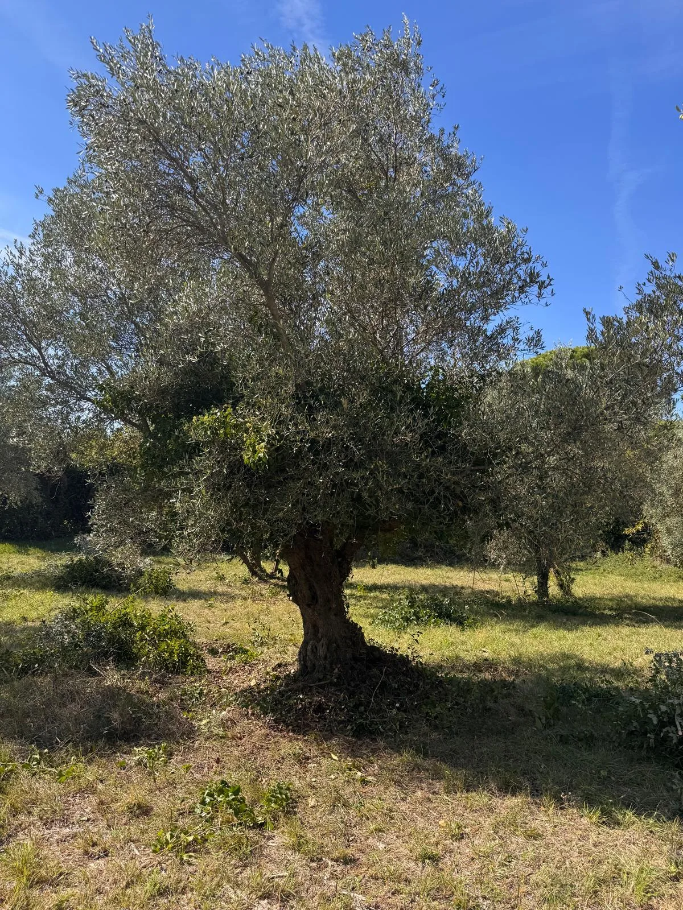
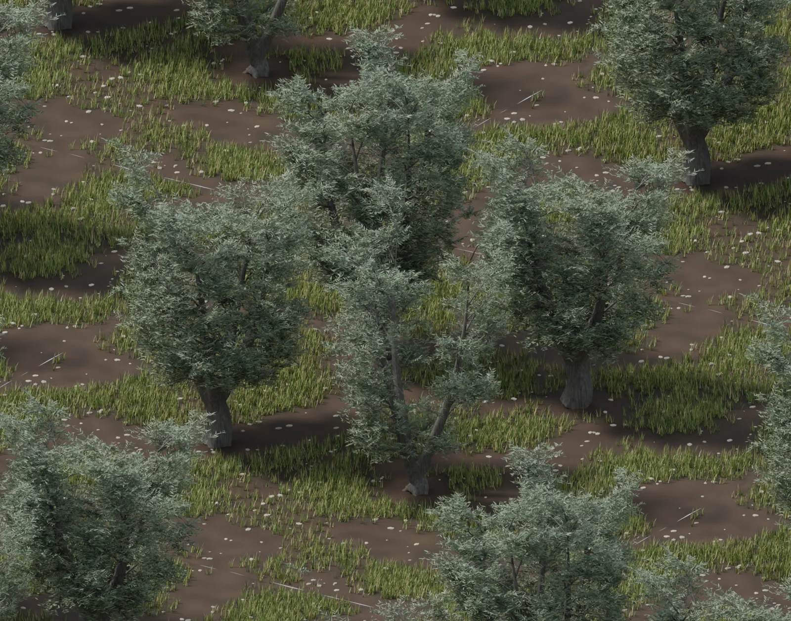
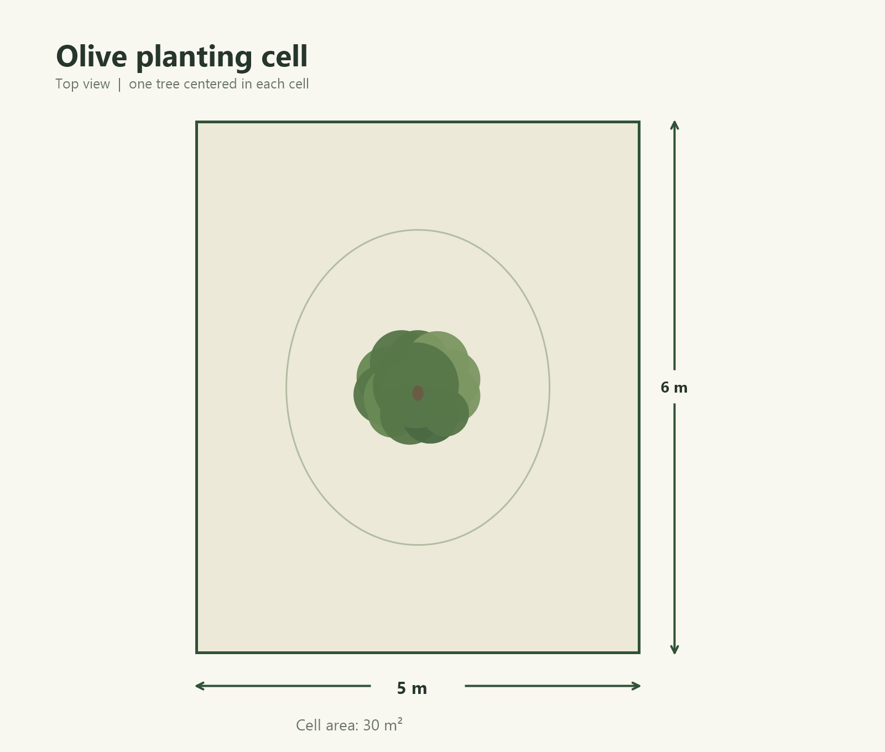
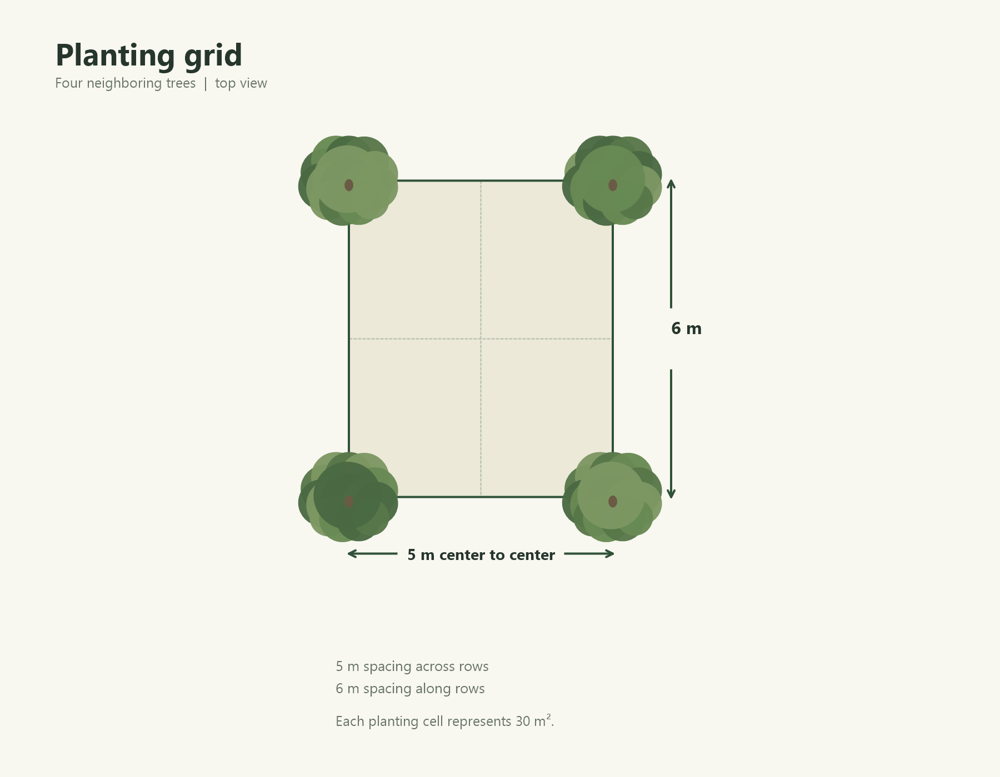
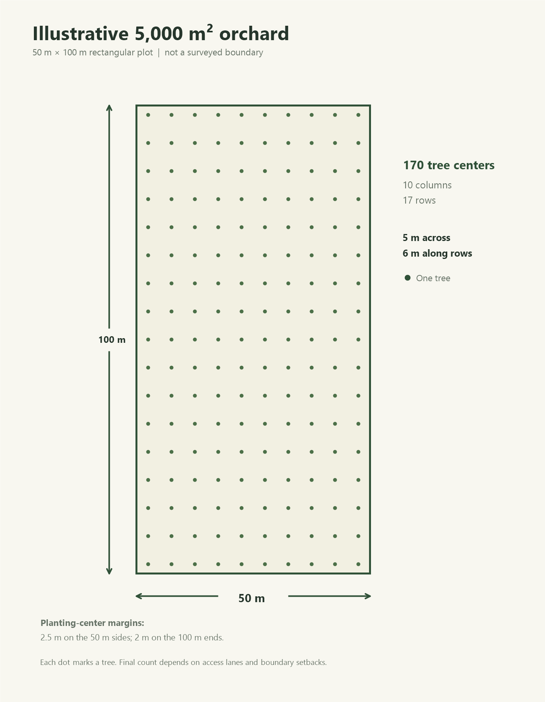

Land restoration · Personal project
Restoring an
old olive field.
Bringing an old olive field back into care, starting with the trees and the landscape already there.
This project brings together photographs of the field, digital studies of its olive trees, and illustrative planting layouts to explore the orchard and document its restoration.
Explore the field
01 / The starting point
A field with a history
The field currently has 30 Tonda del Matese olive trees. We are planning to add Leccio del Corno, Frantoio, and Pendolino varieties as the restoration progresses.
The existing trees are the starting point. These photographs record the field and provide references for studying the trunks, crowns, and spaces between trees.


02 / Digital studies
Four trees, one small field study
A single 2 × 2 study brings together four photo-guided olive trees to explore their shapes and the space between them. Tree dimensions are visual estimates rather than surveyed measurements.


03 / Exploring the layout
From one tree to a whole field
The diagrams explore a regular grid with 5 m between rows and 6 m along rows. They are geometric examples for thinking about space, rather than a survey or a final restoration plan.



An ongoing restoration
Keeping a record as the field changes
This page brings together the starting photographs and the current digital studies. It will serve as a place to document restoration decisions and progress in the field.
Back to all projects →